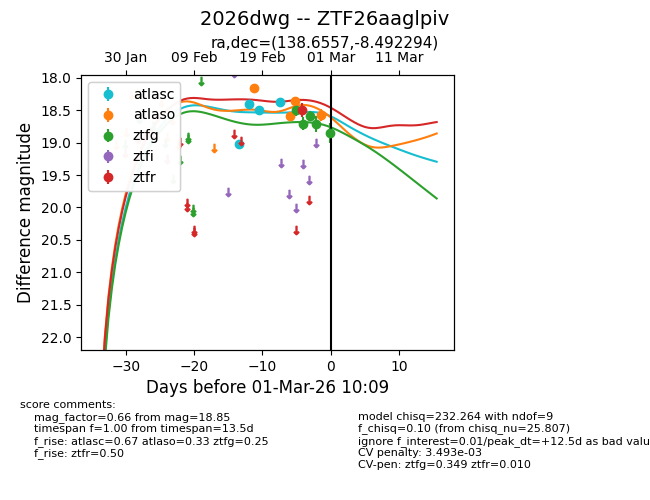
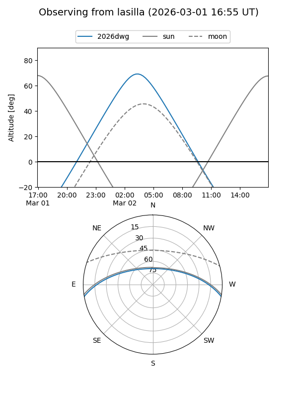
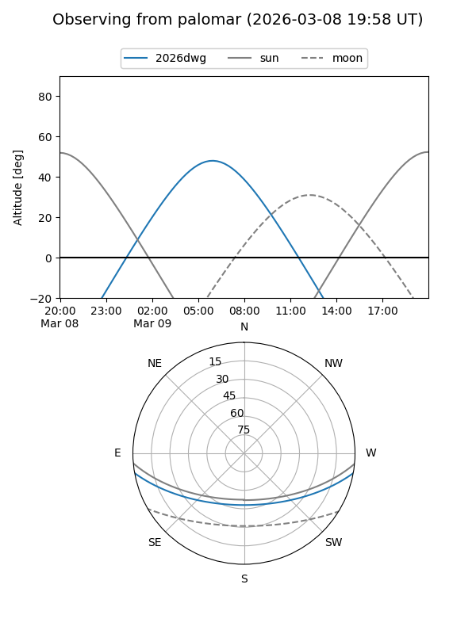
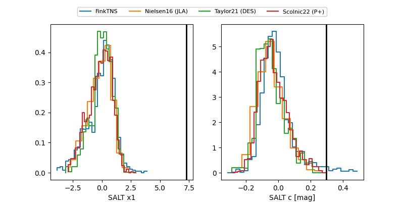

2026dwg
Target 2026dwg at 2026-03-01 10:10
Aliases and brokers:
FINK: link
Lasair: link
ALeRCE: link
TNS: link
YSE: link
alt names
ZTF26aaglpiv (ztf,fink_ztf)
2026dwg (tns,yse)
Coordinates:
equatorial (ra, dec) = 138.6557,-8.49229
equatorial (HMS+DMS) = 09:14:37.38,-08:29:32.26
galactic (l, b) = (239.1594,+26.58421)
Flags:
likely cv
Photometry:
last atlasc=18.37, atlaso=18.58, ztfg=18.85, ztfr=18.50
4 atlasc, 4 atlaso, 5 ztfg, 1 ztfr detections
Lightcurve

Visibility


Additional plots
